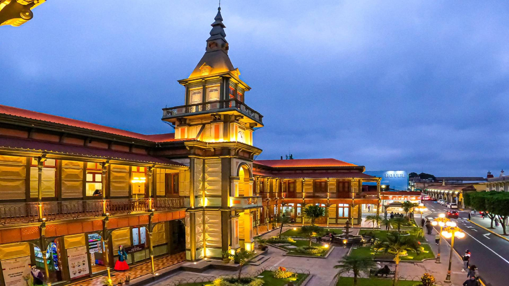

Orizaba
La Ciudad de las Aguas Alegres

Veracruz es la puerta historia de México, tierra donde se encuentran culturas ancestrales y el legado colonial que definió nuestro país. Desde la llegada de las expediciones españolas hasta la consolidación de nuestras tradiciones, el estado ha sido escenario de grandes transformaciones que hoyse reflejan en riqueza arquitectónica y cultural que definen a nuestro estado.